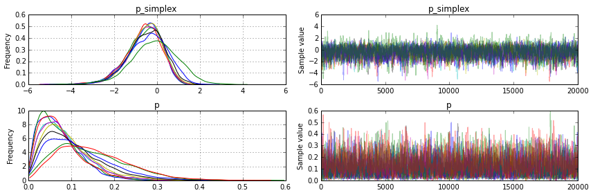
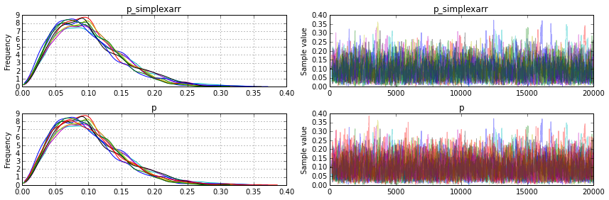
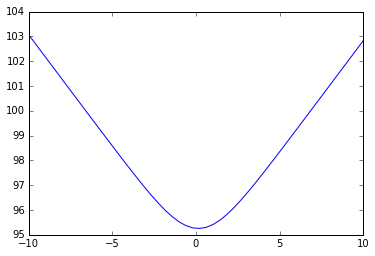

%pylab inline
from pymc3 import *
Populating the interactive namespace from numpy and matplotlib
with Model() as model:
a = np.array([1,1,1,1,1])*10
k=10
a = np.ones(k)*3
#p = Dirichlet('p', a, shape=k, transform=simplexarrtransform)
p = Dirichlet('p', a, shape=k)
#c = Categorical('c', p, observed=[0,0,1,1,0,2])
print (model.test_point)
step = Metropolis(model.vars)
trace = sample(20000, step)
a = traceplot(trace)
[ 1. 0.9 0.8 0.7 0.59999999 0.49999999
0.39999999 0.29999999 0.19999999 0.1 ]
[ 1. 0.9 0.8 0.7 0.59999999 0.49999999
0.39999999 0.29999999 0.19999999 0.1 ]
{'p_simplex': array([ 0., 0., 0., 0., 0., 0., 0., 0., 0.])}
[-----------------100%-----------------] 20000 of 20000 complete in 4.0 sec

summary(trace)
p_simplex:
Mean SD MC Error 95% HPD interval
-------------------------------------------------------------------
-0.610 0.840 0.036 [-2.337, 0.803]
-0.625 0.847 0.033 [-2.252, 0.915]
-0.635 0.862 0.041 [-2.428, 0.828]
-0.553 0.839 0.035 [-2.149, 1.030]
-0.579 0.839 0.033 [-2.151, 0.965]
-0.526 0.810 0.028 [-2.098, 1.055]
-0.492 0.869 0.033 [-2.172, 1.187]
-0.404 0.935 0.041 [-2.147, 1.336]
-0.097 1.091 0.056 [-2.213, 2.039]
Posterior quantiles:
2.5 25 50 75 97.5
|--------------|==============|==============|--------------|
-2.512 -1.089 -0.493 -0.015 0.721
-2.497 -1.137 -0.529 -0.010 0.763
-2.547 -1.111 -0.548 -0.057 0.802
-2.513 -1.024 -0.462 0.029 0.826
-2.337 -1.059 -0.502 0.012 0.830
-2.322 -1.002 -0.458 0.020 0.885
-2.380 -1.033 -0.427 0.117 1.013
-2.353 -1.007 -0.341 0.243 1.239
-2.390 -0.783 -0.075 0.627 1.940
p:
Mean SD MC Error 95% HPD interval
-------------------------------------------------------------------
0.072 0.047 0.002 [0.003, 0.161]
0.074 0.050 0.002 [0.002, 0.169]
0.076 0.052 0.002 [0.001, 0.177]
0.084 0.054 0.002 [0.003, 0.187]
0.086 0.055 0.002 [0.001, 0.191]
0.093 0.059 0.002 [0.002, 0.210]
0.103 0.067 0.002 [0.004, 0.233]
0.117 0.074 0.003 [0.004, 0.262]
0.143 0.083 0.004 [0.005, 0.296]
0.152 0.082 0.004 [0.012, 0.306]
Posterior quantiles:
2.5 25 50 75 97.5
|--------------|==============|==============|--------------|
0.009 0.036 0.064 0.099 0.186
0.009 0.035 0.064 0.102 0.197
0.010 0.038 0.065 0.101 0.205
0.010 0.043 0.074 0.115 0.212
0.013 0.044 0.073 0.116 0.220
0.014 0.049 0.081 0.125 0.244
0.014 0.052 0.089 0.140 0.267
0.016 0.060 0.102 0.160 0.295
0.020 0.079 0.130 0.194 0.324
0.028 0.089 0.140 0.203 0.340
with Model() as model:
a = np.array([1,1,1,1,1])*10
k=10
a = np.ones(k)*3
p = Dirichlet('p', a, shape=k, transform=simplexarrtransform)
#c = Categorical('c', p, observed=[0,0,1,1,0,2])
print (model.test_point)
step = Metropolis(model.vars)
trace2 = sample(20000, step)
a = traceplot(trace2)
{'p_simplexarr': array([ 0.1, 0.1, 0.1, 0.1, 0.1, 0.1, 0.1, 0.1, 0.1])}
[-----------------100%-----------------] 20000 of 20000 complete in 2.6 sec

summary(trace2)
p_simplexarr:
Mean SD MC Error 95% HPD interval
-------------------------------------------------------------------
0.098 0.050 0.003 [0.016, 0.190]
0.097 0.051 0.003 [0.012, 0.193]
0.099 0.051 0.003 [0.012, 0.196]
0.107 0.057 0.004 [0.014, 0.220]
0.105 0.054 0.003 [0.016, 0.210]
0.100 0.050 0.003 [0.015, 0.193]
0.102 0.053 0.003 [0.019, 0.213]
0.096 0.055 0.003 [0.010, 0.207]
0.096 0.047 0.002 [0.012, 0.185]
Posterior quantiles:
2.5 25 50 75 97.5
|--------------|==============|==============|--------------|
0.023 0.060 0.091 0.130 0.206
0.023 0.059 0.090 0.129 0.214
0.021 0.063 0.093 0.126 0.219
0.023 0.064 0.098 0.140 0.245
0.024 0.066 0.098 0.137 0.230
0.022 0.063 0.095 0.130 0.211
0.025 0.062 0.093 0.133 0.224
0.021 0.056 0.086 0.124 0.233
0.023 0.060 0.090 0.125 0.203
p:
Mean SD MC Error 95% HPD interval
-------------------------------------------------------------------
0.098 0.050 0.003 [0.016, 0.190]
0.097 0.051 0.003 [0.012, 0.193]
0.099 0.051 0.003 [0.012, 0.196]
0.107 0.057 0.004 [0.014, 0.220]
0.105 0.054 0.003 [0.016, 0.210]
0.100 0.050 0.003 [0.015, 0.193]
0.102 0.053 0.003 [0.019, 0.213]
0.096 0.055 0.003 [0.010, 0.207]
0.096 0.047 0.002 [0.012, 0.185]
0.099 0.053 0.001 [0.013, 0.204]
Posterior quantiles:
2.5 25 50 75 97.5
|--------------|==============|==============|--------------|
0.023 0.060 0.091 0.130 0.206
0.023 0.059 0.090 0.129 0.214
0.021 0.063 0.093 0.126 0.219
0.023 0.064 0.098 0.140 0.245
0.024 0.066 0.098 0.137 0.230
0.022 0.063 0.095 0.130 0.211
0.025 0.062 0.093 0.133 0.224
0.021 0.056 0.086 0.124 0.233
0.023 0.060 0.090 0.125 0.203
0.020 0.059 0.090 0.130 0.228
trace[-1]
{'p': array([ 0., 0., 1.]),
'p_simplex': array([ -3.87234445e+23, -1.38063818e+22])}
with Model() as model:
k=3
a = np.ones(k)*.5
p = Dirichlet('p', a, shape=k, testval='mean')
#c = Categorical('c', p, observed=[0,0,1,1,0,2])
start = find_MAP()
step = NUTS(model.vars, scaling=guess_scaling(start)*10)
trace = sample(5000, step, start=start)
a = traceplot(trace)
guess_scaling(trace[-1], model=model)
step.Hbar
start
np.exp(-.097)
with model:
dlp = model.dlogp()
dlp(model.test_point)
model.test_point
find_hessian(model.test_point, model=model)
model.test_point
def conditional_pdf(variable, index=None, start=None, model=None):
model = modelcontext(model)
if start is None:
start = model.test_point
variable, = inputvars(variable)
replace = {model[varname] : theano.tensor.as_tensor_variable(value) for varname, value in start.items() }
x = theano.tensor.scalar('x0', dtype=variable.dtype)
x.tag.test_value = start[str(variable)][index]
replace[variable] = theano.tensor.set_subtensor(replace[variable][index], x)
print (replace)
logpt = theano.clone(model.logpt, replace, strict=False)
print (inputvars(logpt))
return theano.function([x], logpt)
with model:
f = conditional_pdf(p, 1, start=start)
{p_simplex: IncSubtensor{Set;int64}.0}
[x0]
start
{'p_simplex': array([-113.89917758, -62.69917758])}
x = np.linspace(-10,10)
y = [f(v) for v in x]
plot(x,y)
[<matplotlib.lines.Line2D at 0x10eaa3080>]

def logistic(x):
return 1.0/(1+np.exp(-x))
logistic(np.array([0.08588418, -0.74669407]))
theano.tensor.extra_ops.cumprod([2,3,4,5]).tag.test_value
array([ 2, 6, 24, 120])